AWS - Developer Associate Certificate
Domains of the course Course-Link, PluralSight
- Development of aws services (32%)
- security (26%)
- deployment (24%)
- troubleshooting and optimization (18%)
130 minutes - 65 questions
IAM
IAM - Identity Access Management
main usage - to controll acess to the resources end points - users, groups , roles , policies
- roles - defines a set of conditions on resources , users or group or applications inherit these properties
- A role provides a dynamic way to provide permission of interact with the resoruces
- policies - A direct way to interact way with resources.
A role can follow a set of policies to interact with
E.g - creating a new policy and attaching a role to it
- policy name -
ReadOnlyAccessToS3Bucket
1 2 3 4 5 6 7 8 9 10 11 12 13 14 15 16 | |
- Role Name: EC2ReadOnlyS3Role
1 2 3 4 5 6 7 8 9 10 11 12 | |
To check if a policy can perform a set of actions we can use
AWS Cognito
- service to provide authz and authn features with the aws resources
User Poolcontains information such as the JWT token issued by third party authN providersIdentity Poolcontains information which is used to assign a new IAM role to the user and provide temporary access to the aws resources-
Different policy types offered in IAM
-
inline policy --> this is a policy which can be attached to a single user or a single group and maintains a 1:1 relation (i.e only can be used by them, whenever the user is deleted the policy is deleted)
- AWS managed --> this is a default policy which is authored and managed by aws, it has policy .for each service
- customer managed --> this type of policy is used when organization need tailoring of the aws managed policies.
RBAC
- Role Based Access Control, in this model a role is created with a certain policies attaced to it to satisty a job, this model is adopted by the IAM.
Active Directory
-
Identity Provider Store(Idp)
-
contains details about the authentication for the users
- mentions the access and actions which each user can perform
-
can use the IAM or connect to an extrenal Active Directory which can be cannonical to Idp
-
Identity Broker
-
It acts as a central checkpoint for multiple Idp's
- Cognito can assume this role to validate credentials from multiple third party applications
STS
- aws provides the service to access the resource in a different aws account through sts AssumeRole policy
- a new IAM role is created in the main account which is shared with the second account to share access to the resources
credential_process- in aws cli this is used to define a metadata parameter which specifies an external authentication connection to be used during the auth process-
credential_source- in aws cli the credential source defines the method or source from which auth codes should be fetched , different options of auth are -
IAM role (sts assume-role)
- SSO (configure single sign on profile)
- web identity configuration (sts assume-role-with-web-identity, provide the token with parameter web-identity-token)
-
export it as environmnet variables
-
both the
credential_processandcredential_sourceare present in the ~/.aws/config folder -
different way to pass credentials to an aws sdk
-
set environment variables and set the
credential_soruceto fetch the creds - configure the ~./aws/credentials file to read the credentials
- the AWS_SDK_LOAD_CONFIG variable which points to the path of credentials folder or file
aws.config.loadFromPathfunction which reads the credentials from a json file.
ACM
- AWS certiicate Manager, services used to create, store and renew public and private ssl/tls certificates
- acm wildcard certificates can be used to protect the subdomains, when the keys are signed by acm certificate authority(CA) they can be used everywhere in the companies public key infrastructure (PKI)
VPC
-
NACL (Network ACL)
-
use to protect the subnets traffic
- its stateless
EC2
- Elastic Cloud Compute
-
pricing types
-
on Demand (pay per use)
- Reserved (prepay and long term)
- spot (fix a max price , the instances are balanced dynamically)
- dedicated
EBS storage types
- gp2 , gp3 - general purpose (3000 - 16000 IOPS)
- io1,io2,SAN - faster access (16000 - 64000 IOPS) , can be attached to mulitiple instances
- SAN - (256000 IOPS)
-
st1 (500 mbps), sc1 (250mbps) - hdd storage
-
ec2 instance and ebs volume should be in the same availability zone in order to attach them.
- general purpose ssd - virtual desktops , test and dev env, low latency iot devices
- throughput optimized - streaming data
- cold hdd - used for infrequent data
- provisioned i/o - critical sustained processing
- instance profile in ec2 are used to attach the IAM roles to the instace, a single role can be shared by multiple ec2 instances.
Elastic Load Balancer
types
- application (http / https requests)
- network load (tcp)
-
gateway load balancers (used to serve third party applications such as firewalls)
-
Main use case is to efficiently forward requests to the appropriate server
- the load balancer has a private address by default , it used the x-forwarded-by property to find the ip address of end user
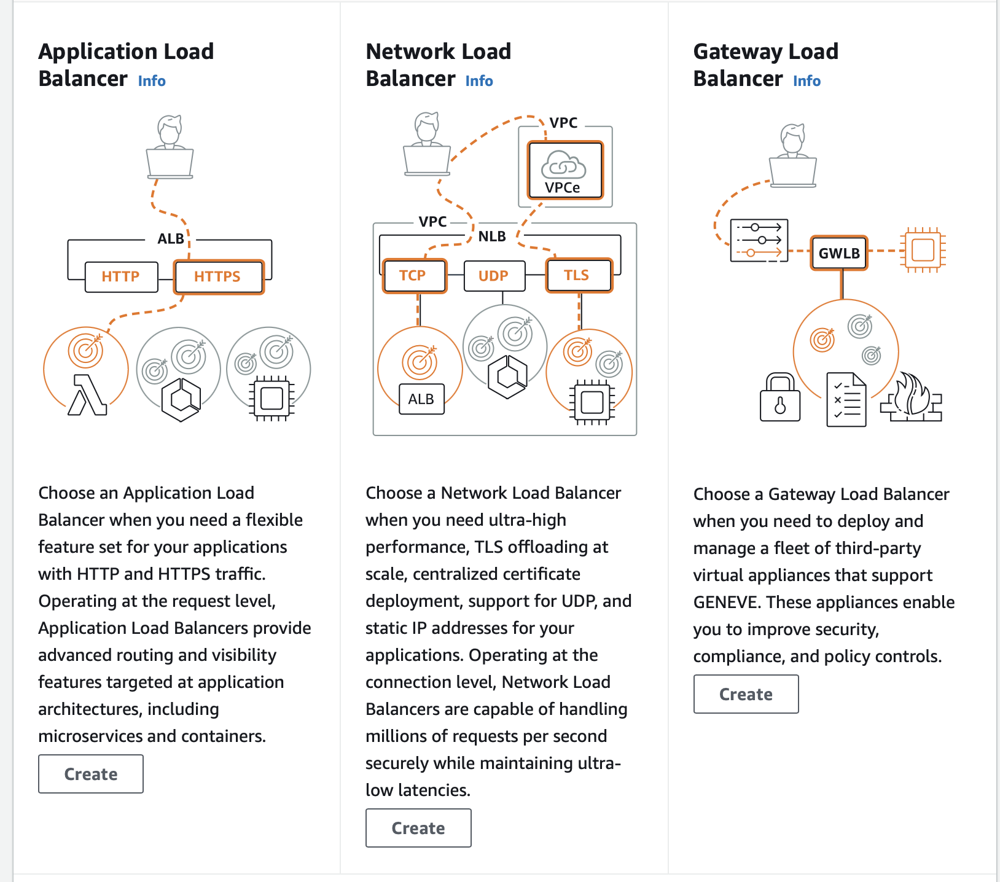
- connection draining happens in elb when one of the instance is in draining stage and it reroutes the new requests to the healthy units
RDS
- main use case: In case of Transaction data , use RDS if use case need to perform analysis on large data use RedShift
to improve performance - Read replica snapshots of rds instances are provided to resolve disasters - Multiple rds instances are allocated in different Availability zones
-
two different options to perform backups
-
automated - handled by aws , these are performed in definitive time window, can be stored across multiple time zones
-
manual - a snapshot is created manually by the user and its stored in an s3 bucket (charged) , this snapshot would be having a different RDS endpoint compared to the parent
-
An unencrypted RDS instance can be encrypted by making a manual snaphot and encrypting it.
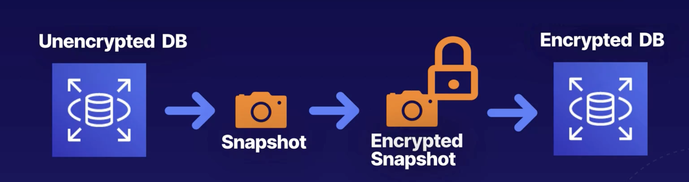
- RDS proxy: its used to load balance all the incoming traffic to the rds instance , in case of any instance failures all the transactions are stored in the proxy servers and are resolved post failure resolving process.
ElastiCache
In memory storage in aws, two types are available
- memcache (used to store simple cache , session storage of website) - memcache sits in front of an RDS instance
- Redis (complex datatypes, larger applications such as online gaming)
MemoryDB for redis is alternative to an RDS service
Caching Strategies
-
different caching strategies in cache
-
write - through --> add data to cache first before writing to the database
- read-through --> first queries the cache before making a request to database, then updating the cache
- lazy loading --> load items into the cache only when the items are required to be loaded into cache
- adding ttl --> put a new ttl record to each item , this would reduce the cluttering of the cache and frequent update of the cache.
Parameter Store
System manager service provides the parameter store to encrypt sensitive data and pass on to other resources
Secrets Manager
- AWS secret manager is used to store all the database passwords , api keys . etc.
- rotation of the keys can be enables in secrets manager which is handled by an lambda function
- use programmatic way to retrive keys from the manager
- it uses a key from aws kms to encrypt and it can be replicated in other zones
EC2 Image Builder
- EC2 instances can be used to test and build images
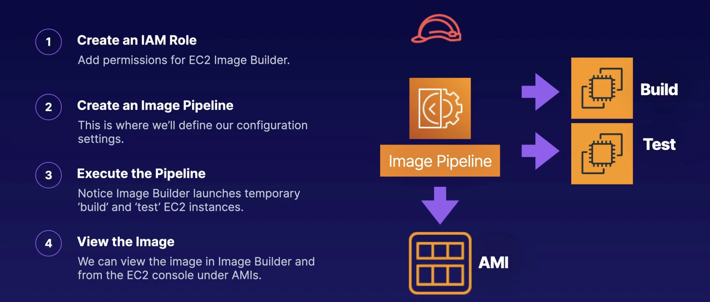
S3
Simple Storage Service
Different types
- Standard (general purpose)
- standard - infrequent access (store backup files)
- glacier and glacier archive (large archive data)
- Intelligent Tiering (auto shift between storage types based on access frequency)
Encryption types
- SSE-S3 (managed by s3 , not by kms - default)
- SSE-KMS (managed by kms)
- SSE-C (managed by customer)
- DSSE-KMS (dual encryption managed by kms)
By default CORS is disabled between two s3 buckets , edit the properties and allow the host to enable CORS
-
in the lifecycle policy of the s3 , the following components are decided
-
days after which the storage class should be changed
- days after which the object should be removed from the storage service
CloudFront
CDN network provided by aws
- Edge Location (cache location with definitve ttl)
-
CloudFront origin (origin of files (s3,ec2,elb,r53))
-
Can assign a resource to be restricted by use of signed URL or signed cookies.
additional topics - AWS WAF (firewall) --> mainly used to restrict all the incoming traffic to the origin
- A new origin access identity is required whenever we need to restrict access to the s3 buckets
Allowed Methods
- GET, HEAD (resource_headers) (read-only)
- GET, HEAD, OPTIONS (request_to_know_allowed_methods) (read-only)
- GET, HEAD, OPTIONS, PUT, POST, PATCH, DELETE (read-only and write)
OAC
- OAC controls access to the origin source in cloudFront
- this acts as a special identity
Athena
Service used to run SQL queries on data stored in s3 buckets
usecases - log analysis, generating reports based on s3 data, click data analysis
- need to create a new s3 bucket before analysis to store all the results of the queries.
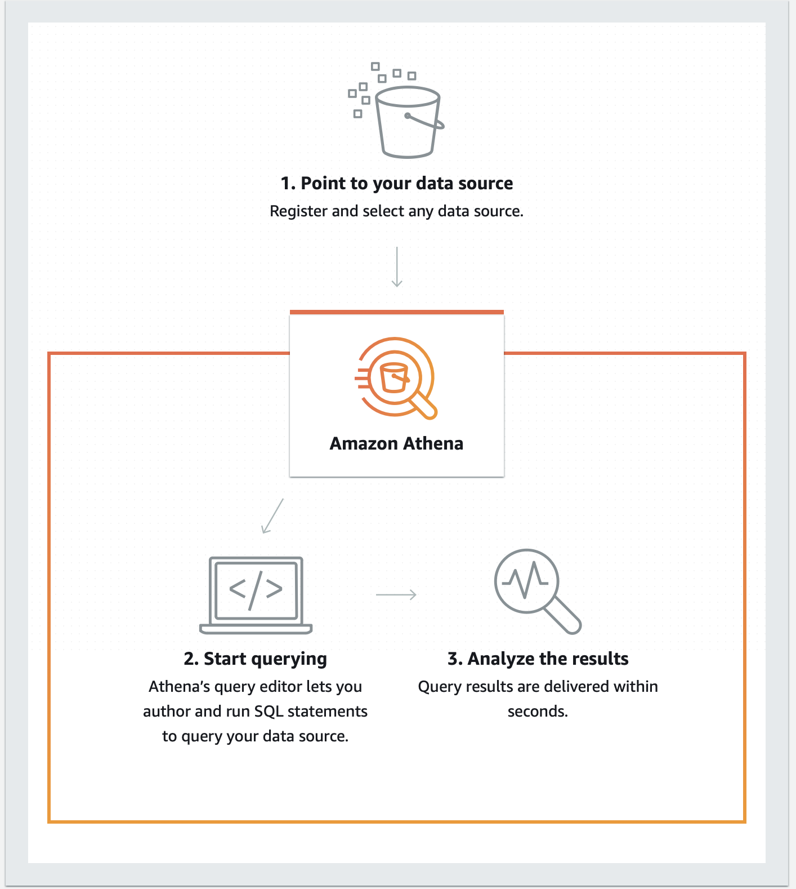
ServerLess Architectures
diff types of serverless arch
- lambda
- sqs
- sns
- api gateway
- dynamodb
- s3
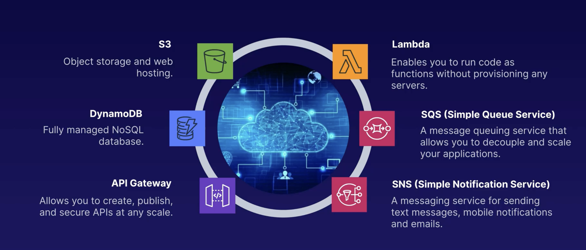
lamda
- serverless arch to run applications and microservices , the run time environment is handled by aws
- priced based on number of requests and memory consumption of the program
-
different triggers to invove a lamda function
-
change in s3 bucket, dynamo table (any changes to resources)
-
user requests (api gateway to invoke requests)
-
increasing the memory of a lambda function automatically add CPU to the instance.
- error handling in lambda functions can be handled by usage of dead letter queues which send the error logs using the sns service.
- lambda provides
aliasoption to maintain different versions of the function, each alias has a unique ARN - an alias cannot point to another alias, alias routing configuration can be used for sending a specific portion of the incoming traffic to a different version of the function
-
lambda functions using c#,java,python
-
handler definition in python file_name.handler_function_name
- in Java, the main function implements the interface
RequestHandler, the handler function is defined asMainClass::MainFunction - in c#, the handler is defined as NameSpace::MainClass.FunctionName
API Gateway
- service which sits in front of all RestFul API sockets and handles incoming requests.
- All requests made to API gateway are logged in cloudWatch
- API gateway allows importing of the openAPI profile and also allows SOAP protocol by transforming XML into JSON formats
- API gateway also allows mock integration endpoints for testing, use case when a front end dev team finsihes their code and wants to test but theres no available back end , they can create mock tests to test out the routes
-
fields in the mock test
-
status code
-
body message
-
API Gateway also provides option of caching , in this option all the responses are cached with a ttl of 300 seconds , any new request made to gateway uses the cache
-
API gateway also allows throttling of the request.
-
by default it allows 10,000 requests per second
- if we get more no of requests than the limit , the requests are throttled to the next second without resulting in an 429 server overload response code.
version control
- lambda offers version control to manage different stage od SDLC , $LATEST sign indicates the default version. We can also create aliases in the functions to route traffic between two different versions of the code.
- lambda function can join a vpc and connect or create elastic resources in that particular vpc, need to add additional policies to acheive this.
step functions
- service to orchestrate several serverless functions, the step function consists of a state machine which handles all the tasks in it.
-
different types of executions
-
series tasks
- parallel tasks
- series + parallel
- branching (conditional statements)
Data storage in lambda functions
By default lambda functions are stateless, different options to provide storage to lambda functions
- /tmp (accessible from 512mb to 10gb, works in the same environment and can be shared by all functions using the runtime)
- layers (used to manage all the libraries required for the runtime (50mb ))
- EFS (File system which can be mounted at runtime , it should be in the same vpc as the lambda function, allows dynamic read and writes)
- DynamoDB (files or value directly stored to DB)
- S3 (store files in s3)
DynamoDB
- NoSQL database servie provide by aws, it does not have any schema structure , data is stored in tables , each row is an item and each column of the table is an attribute , the data is stored in json format
-
two types of keys can be used to indicate the primary key
-
partition key
-
partition key + sort key (when a same user has multiple records , a student taking multiple course, in this case user_id+course_id is the PK)
-
access to the DDB is controlled through IAM roles, access can be blocked by adding conditinal statements in policy
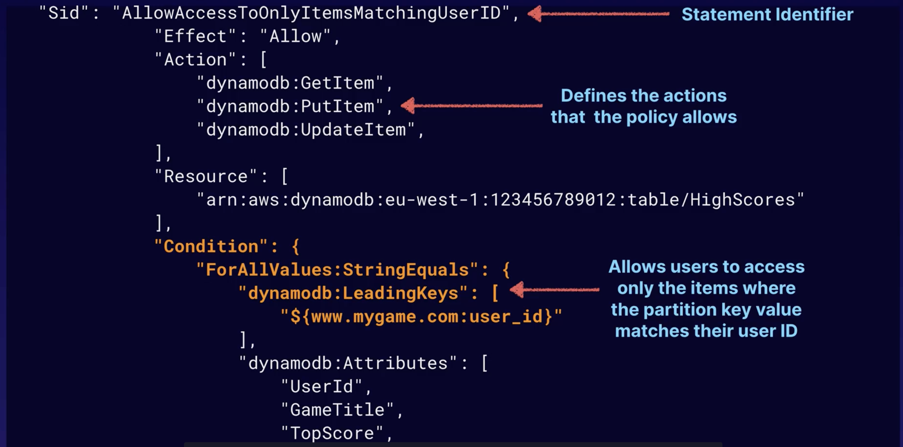
- in this example policy , the condition states only matching records with
user_idshould be displayed or queried as response. - a local secondary index can also be used to query results along with a single partition key , a local secondary index must be created at the creation time
- a global secondary index on other hand can be paired up with multiple partion keys spread across table and can be created at any time.
Queryis used to scan items in the table based on a partition key along with sort keyScanis used to scan all the items in the table , does not depend on the primary key or secondary key to scan the items.- dynamo tables are different in different regions
us-east-1andus-west-1would be different.
Read and write capacities
- dynamo db provides Read and write capacity units as metrics
- each
READunit can read 4kb per second data in eventual consistency and 2KB/sec in stong consistency. - each
WRITEunit can write 1kb/sec
DAX
- dynamo db offers in memory cache which sits infront of the db
- workflow --> when ever a user queries , it first checks the DAX if its a cache hit , return res, else query db
- usefull in case of eventual read consistency and heavy read intensive applciations , black friday sales
TTL
- dynambo db offers the service to auto remove objects from the table based on a defined ttl.
- the attribute used to set ttl must be in
epoch-timeformat
DynamoDB Streams
- its a service which stores time - ordered sequence data in table
- it stores the data for 24 hours
- it has a different api than the dynamo db , its usefull as a trigger for lambda functions.
- all the records are cleaned after 24 hours
-
usecase
-
when ever a payment record is stored in the db stream , a lambda event is triggered
- the lambda event sends a sns notification and adds the item to sqs queue which is processed and a reciet is genereated
ProvisionedThroughPutException
- when the request exceed the read and write units quota .this exception is thrown
- to avoid this a
exponential backoffpattern is followed, (e.g first try 50ms ,second - 100ms , third -200)
KMS
- AWS key management service, it can be inherited by other storage services to encrypt / decrypt incoming and outgoing data
- it follows envolope encryption method , where a master key encrypts a data key which in turn is used to encrypt the main data files
-
useful commands in kms
-
encrypt , decrypt
- rotate key (periodically update the customer master key)
-
generate data key (used to generate a new key , which in turn can be used to encrypt and decrypt other data contents)
-
GenerateDataKeyAPI is used in envolope encryption process
-
envolope encryption process is used to avoid the transfer of big data files into kms server , instead it would just transfer just the data key over the network.
SQS
- usecase -> its a pull based queue service sitting between the receiving end and the output receiving end. API calls are made to poll the events from queue
- every item has a visibility timeout (30sec), if the event is not processed within the time limits, its pushed back onto the queue to reprocess.
- default retention period of sqs is 4 days and each item can be <=250kb
two types of queue are presnet
- standard (default, allows duplicated and can be unordered)
-
FIFO (ordered queue , rate limit at 300 TPS)
-
Delays can be introduced into the SQS to properly allow the functioning of async operations. default is 0 , max is 900 seconds
-
if file size is >256kb , can use s3 to store the data, in order to perform this the components needed are
-
SQS Extended client for java
- aws sdk java
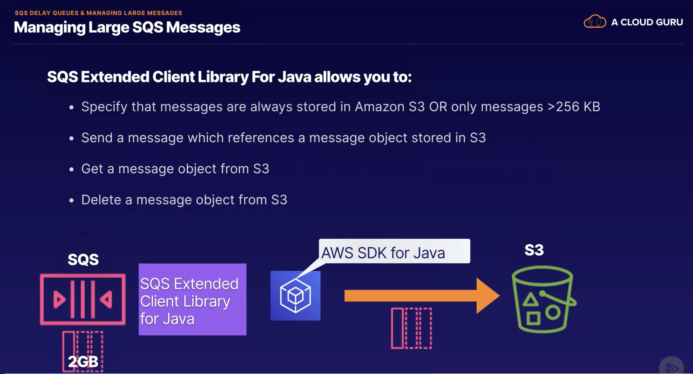
SNS
- simple notification service , used a pub/sub model to deliver notifications
- a topic is created and all the consumers subscribe to that topic
- can be used to trigger lambda functions
SES
- simple email service , its similar to SNS but only for emails , supports both incoming and outgoing mails , mails are stored in an s3 bucket.
- used for marketing , can be used as a trigger to lambda function
Kinesis
-
service to provide real time data analyis services , three different types
-
kinesis streams
- kinesis data firehose
- data analytics
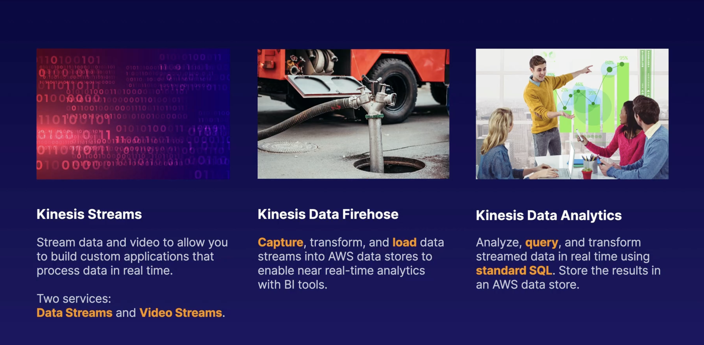
streams
- mainly used for data stream analysis or video analysis
- the whole input stream is divided into multiple shards which define the rate limit of the stream
- can connect to lambda for processing and store in s3, or emr or redshift
data firehose
- similar to streams but has no shards or no retention
- directly stores data onto the storage units
data analytics
- sits in between the kinesis stream and the storage units
- can run on demands sql queries related to BI and store the results in storage units
consumers
- The kinesis provides a Client library which handles the connections between the consumers and the shards
- its a one:many relation , one consumer can process multiple shards.
- whenever a reshard occurs the client library handles the load balancing of the consumers.
Elastic Bean Stack
- PaaS service , which handles all the infrastructer and deploys the applications
- supports docker container or recommended servers
deployment options
- for this use case consider all the instances running v1 and need to update to v2
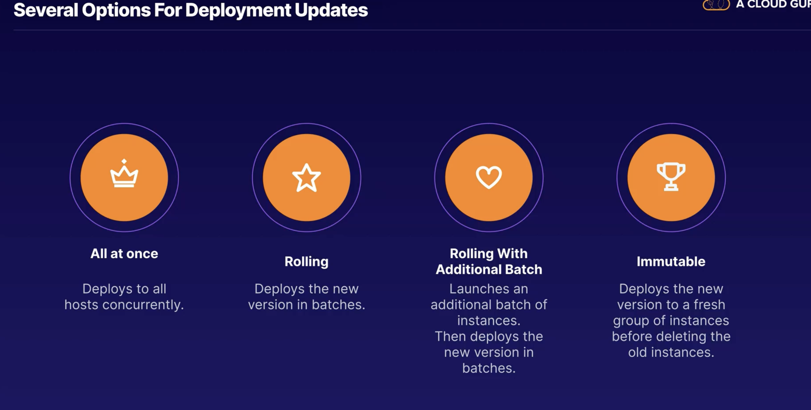
- All at once: In this case , all the existing instances are deployed at once , the system is offline during the deployment phase , suitable for testing
- rolling: In this case , the instances are divided into batches and each batch is updated concurrently , suitable for less load servers
- rolling with additional batch : In this case , a additional batch of instances of batch size is initialized , and the batches are deployed by concurrently , no down time of the servers
- immutable: In this case, new instance for each existing instance is initialized before deployment, after the complete deployment the intances are swapped , no down time, preferrable for production servers
traffic splitting
- In case of immutatble deployment option, a portion of traffic is routed to the new version for a test period, post test pass checks, the slots are swapped.
Advanced EBS
Script Files
- In pre amazon linux 2 environments, all the configurations such as packages to install, shell commands, creating users, enabling services,configuring load balanncers are present in the .config file
- the .config file should be located in the .ebconfig folder at the root dir
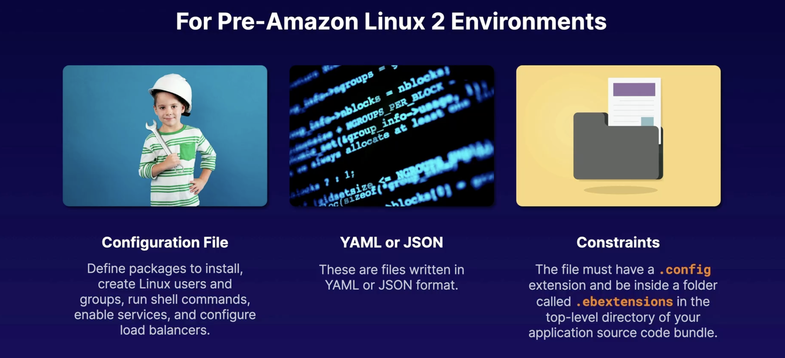
-
In latest versions, the same functionalities are divided into different sections offering modularity
-
BuildFile
-
used to run commands that run for a short time and exit
-
format -->
: <command> -
ProcFile
-
used for running long commands post start of instance 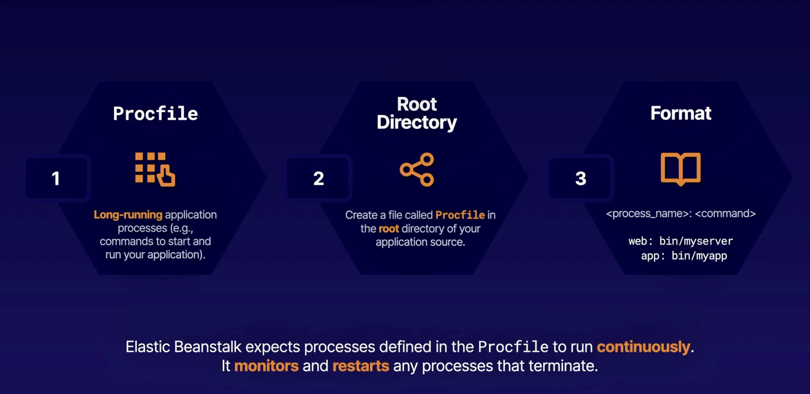
3.PlatformHooks
- this files are used to run scripts after the environment is set up in the EBS. Different scripts can be run at different stages of the application runtime.
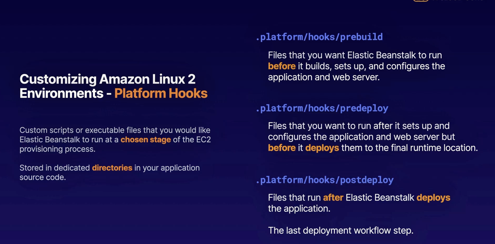
RDS Connections
- If an RDS instance is included during the build process of the EBS instance, whenever we terminate the instace the RDS will be terminated and lost.
- To avoid this we can create the RDS instance seperately and include both EBS and RDS inside a security group and pass the database connection details as environment variables.
CI/CD
- aws provides option of maintaining an git repository through codeRepostiory service
codeDeploy
-
provided options for code deployment
-
in-place deployment (replace each instance, will be having reduced performance)
-
blue/green deployment (new instances are issued and new verision is deployed in the green instance, onSuccess the traffic is routed to the new version and the slots are swapped)
-
All the main aspects of the deployment life cycle and configuration files should be present in the
appspec.ymlfile - example of appsec.yml file
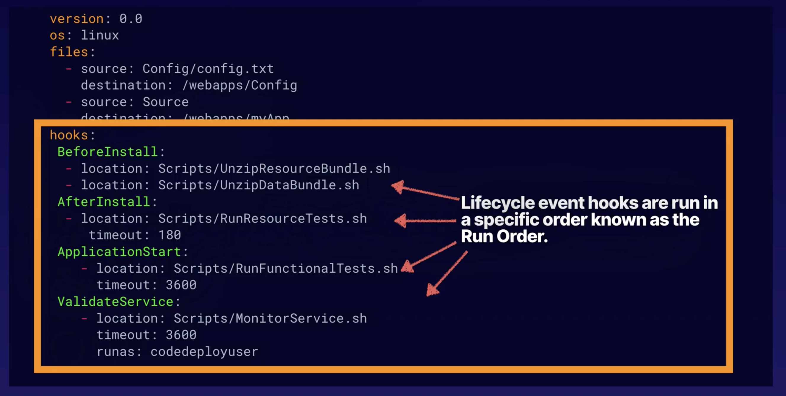
-
The phases of the deployment life cycle
-
beforeBlockTraffic (tasks before de-regestering from load balancer)
- blockTraffic (task to de-register from load balancer)
- afterBlockTraffic (tasks post de-registering from load balancer)
- applicationStop (tasks to stop the application)
- DownloadBundle (fetch resources from the repo.)
- BeforeInstall (backing up current version)
- Install (copy files to the dest.)
- postInstall (clean up scripts, set permissions)
- ApplicationStart
- ValidateStart
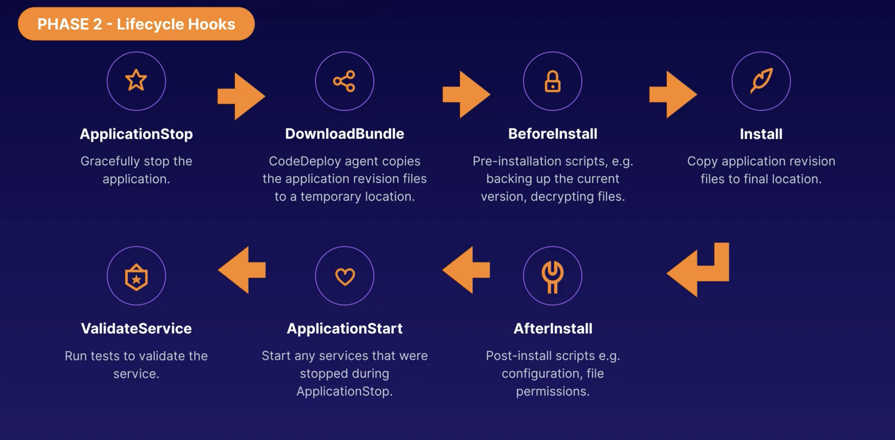
CodePipeline
- All the stages of the deployments can be included into a pipeline
- It used triggers of cloudWatch to look for changes and initiate pipeline
ECS
- Elastic Container Service - orchestration service
- service to run containers on ec2 instances, each container has its own virtual env, which are run on docker containers
-
Two different options are provided
-
Running on ec2 instances (option to manage the underlying arch,)
-
AWS Fargate (serverless containers, aws manages the ec2 instances)
-
All the images meants for ECS are stored in Elastic Container Registry
CloudFormation
- service used to allocate resources based on a template
- used to allocate many resource at a single task , it creates a stack and run's all the queries in the json file
- all the required instances are defined in the
resourcessection - includes import and export features, to include the features of one template into another and chain the stacks
-
in the cloudFormation.yaml file
-
cfn-init is used to retrieve metadata, install packages, create files and start services
-
cfn-signal is used to indicate the completion of a process in the stack
-
deletion
Severless Application Model
- this service is used mainly to create serverless application instances based on the cloudFormation template
- uses the functions
packageanddeployfor its operations - The sam cli can be used to test before deployment of the resources
-
use case testing a lambda function before deployment
-
use
sam local start-lambda - this would create a docker container to simulate the environment along with mocking if the service requires access to s3 or dynamodb
- creates a local endpoint (localhost://3000)
- invoke the function using
sam local invoke - whenever a request arrives at the local end point , the cli routes it to the appropriate docker container and executes it
CDK
- service which is used to allocate and deploy resources based on a code.
-
the components of the cdk include
-
App context (main object)
- Stack (container which is used to define resources)
-
constructs (individual items inside stack which define the resources)
-
The CDK code is compiled into a cloudFormation template post which it's pushed onto the cloudFormation stack.
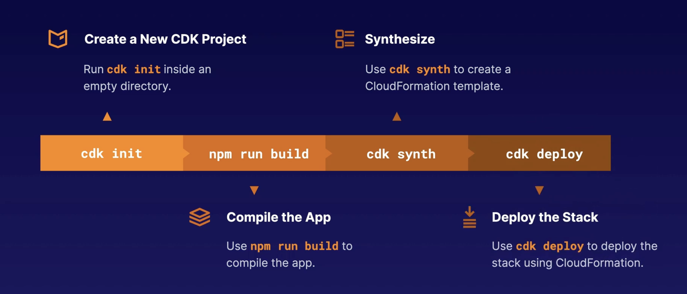
cloudWatch
- service to monitor the aws services
- can be attached to any instance and fetch information at a defined regular intervals
- can install a cloudWatch agent in ec2 instances to collect operating system level information
- can create alarms and triggers use the metrics
CodeGuru
- service to provide a profiler for application running in aws services or on-premises
-
A profiler consits of
-
agent - which is installed on application and sends its runtime state to the profiler
- console - provides data viz of the performance
-
api - manage all the profiling groups
-
this service can be attached to an repository to perform code analyis and provide recommendations
AWS DirectLink , PrivateLink
-
DirectLink
-
dedicated infrastrcuter provided between the aws resources and the on-prem servers, avoid network traffic congestion
-
useful for tranferring large datasets, hybrid cloud archs,cost-effective data transfers
-
PrivateLink
-
this service is used to create a secure tunnel between the aws resources of other accounts, this avoid connection to the public internet
- useful for secure access and maintaining data privacy
AWS CLI
-
the order of presedence in fetching the credentials
-
runtime (terminal or sdk runtime)
- environment variables
- ./aws/credentials
- ./aws/config
- ecs containers
- ec2 instance profiles
Mock Test Important Topics
CloudWatch Agent vs. Athena Queries on S3 Storage
- CloudWatch Agents: Used for monitoring resources.
- Athena Queries: Used for log analysis, business intelligence, and making reports.
Reserved Concurrency vs. Provisioned Concurrency
- Reserved Concurrency: Indicates the maximum instances of the Lambda function that can be invoked.
- Provisioned Concurrency: Indicates the number of instances that are always available to reduce wake-up time.
When to Use System Parameter Store vs. Secrets Manager
- Use System Parameter Store for non-sensitive data and configuration values.
- Use Secrets Manager for managing sensitive information like database credentials, API keys, etc.
CloudWatch Metrics Costs
- Metrics that incur costs include custom metrics, detailed monitoring for EC2 instances, and additional metrics for certain AWS services.
Lambda Function Alias
- Used as a pointer to the version of the function available for deployment.
Strongly Consistent vs. Eventually Consistent
- Strongly Consistent: Ensures immediate consistency across all copies.
- Eventually Consistent: Ensures consistency over time, not immediately.
MFA Authentication Using CLI
- Use
sts get-session-tokento receive temporary credentials valid for 1 hour.
Appspec.yaml File
- Used in CodeDeploy to configure security and permissions.
EB CLI Commands
- Commands include
-r(region),-ip(instance profile),-c(subdomain),-db(relational database),-db.i(specify instance type),-es(enable spot instances),-it(list of EC2 instances required during deployment).
PHI and PII Data Types
- PHI: Protected Health Information.
- PII: Personally Identifiable Information.
AWS SWF
- Service orchestration similar to Step Functions but used for large-scale workflows, capable of running workflows for months.
Amazon Macie
- Service used to detect confidential information (PHI and PII data types) in S3 buckets using classification algorithms.
AWS PrivateLink
- Allows resources inside a VPC to connect to services privately without exposing data to the public internet.
AWS Identity Center
- Provides identity provider (IdP) and service provider (SP) services to the workforce.
Event Source Mapping (Lambda Functions)
- Invocation of a function based on an SQS event.
AWS AD Services
- Fully managed Microsoft AD on AWS Cloud, provides an adaptor to bridge on-premise AD and AWS resources.
AWS Snowball Edge
- Used for data transfer and edge computing.
IAM Identity-Based Policies vs. IAM Resource-Based Policies
- Identity-Based Policies: Attached to IAM users, roles, or groups to define what actions an identity can perform.
- Resource-Based Policies: Attached directly to resources, defining who can access them.
WAF Use Cases
- Protection against SQL injection, cross-site scripting, DDoS attacks, IP filtering, and restriction to specific URIs.
CloudTrail vs. CloudWatch
- CloudTrail: Logs, API analytics, and security investigations.
- CloudWatch: Performance monitoring, application-level monitoring.
S3 Security Best Practices
- Use encryption, access control, and logging for securing S3 data.
EC2 Agent
- Similar to CloudWatch agent, focusing on management of EC2 instances.
Using CodeDeploy to Launch Instances in Microsoft Azure
- Install a CodeDeploy agent on the VM in another cloud provider to make it detectable in the CodeDeploy dashboard.
Availability of KMS Across Different Regions
- KMS is region-specific and keys cannot be transferred using AWS Direct Connect.
STS Options for Getting Tokens and Changing Token Validity Time
- Options include
AssumeRole,AssumeRoleWithSAML,AssumeRoleWithWebIdentity.
Key Policy in KMS
- Each KMS key has a policy attached to it, defining the identities who can use the key.
Default Retention Period of CloudWatch
- 2 weeks (14 days).
AWS SSM Agent and Amazon QuickSight
- SSM Agent: Installed on EC2, sends details about patches, inventory, and configurations to the System Manager.
- Amazon QuickSight: BI service for data visualization.
Log Locations of Different Services in EC2 Instance
app/access.log: Info about the CodeDeploy agent./var/log/messages: Directory containing all logs./etc/awslogs/awslogs.conf: Info about the CloudWatch agent.
Specifying Resources Required in EBS Deployment
- Use configuration files and CLI commands to specify resources.
When to Use AWS Pricing API
- For complex architectures, to fetch all price values in JSON format.
Filters in DynamoDB
- Annotations can be used for filter expressions.
GetTraceSummariesAPI is used for grouping annotations.
Debugging Lambda Functions
- Use CloudWatch logs and X-Ray for debugging.
Secondary Indexes in DynamoDB
- Used to query data more efficiently.
Key Grants in AWS KMS and Providing Temporary Access to KMS Keys
- Key grants provide temporary access to KMS keys.
Approving Every Stage in Code Deployment Pipeline Before Deployment
- Use manual approval actions in CodePipeline.
Lambda Power Tuning
- Tool to run several concurrent versions of Lambda functions at different memory configurations.
CloudWatch EMF
- Embedded Metric Format used to publish logs to CloudWatch in a custom format.
JWT Structure
- Consists of three sections: Header, Payload, and Signature.
AWS X-Ray
- Used to find specific services with errors and high latency. The X-Ray daemon sends data to the API for analytics.
Instance Type Incompatibility with Elastic Beanstalk
- Capacity reserved instances are incompatible with Elastic Beanstalk as they handle instance creation dynamically.
AWS SDK Client for S3
- Can be used for client-side encryption before passing data to S3.
When to Use CodePipeline vs. CloudFormation
- CodePipeline: For automated code delivery.
- CloudFormation: For automated provisioning.
WebSocket API in API Gateway
- Enables long-time connections with low latency.
AWS Transfer Family and Global Accelerator
- AWS Transfer Family: For setting up SFTP, FTP servers.
- Global Accelerator: Improves traffic performance using AWS network infrastructure, reducing latency.
AWS Database Migration Service
- Moves on-premises databases to AWS, supports AWS-to-AWS migrations, and converts between different database services (e.g., MySQL to PostgreSQL).
Unauthorized or Anonymous Access in AWS Cognito
- Create a
guest_rolefor identity pools to define resources accessible by guest users.
Amazon Rekognition and Amazon Comprehend
- Amazon Rekognition: Image and video analysis, object and scene detection, facial analysis, OCR, content moderation.
- Amazon Comprehend: Natural language processing, sentiment analysis, entity recognition, topic modeling, key phrase extraction, language detection.
AWS AppConfig, AWS MSK, AWS AppSync
- AWS AppConfig: Manages application configurations, controls feature rollouts.
- AWS MSK: Managed streaming Kafka service for microservices and event-driven architectures.
- AWS AppSync: Service to build data-driven apps with real-time updates and offline capabilities.
Additional Resources
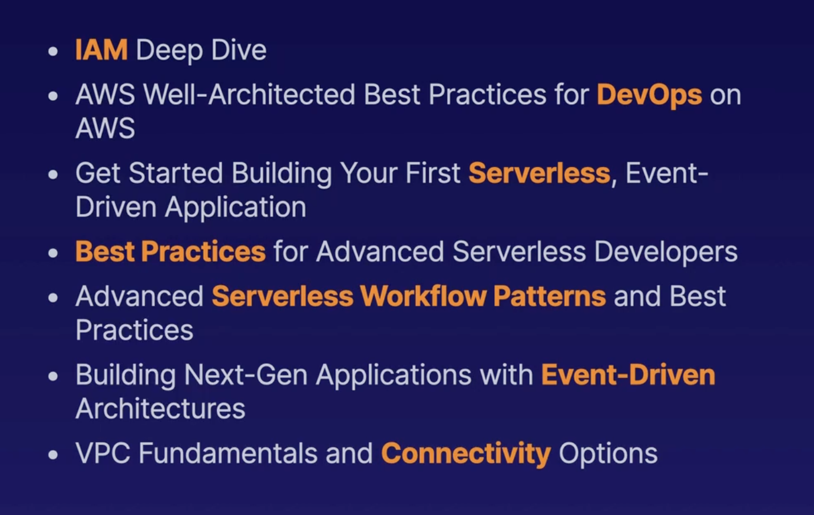